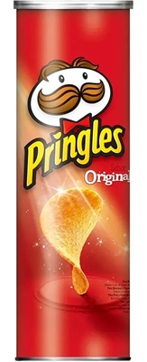

Greatest Story Ever Sold

Exhibitions
Product Displacement, CHG Circa (Corey Helford Gallery), Culver City, California, US, May 23–July 18, 2015.
Notes
The artist, Ron English, is depicted in this painting.
Related Works by Ron English
Earlier Paintings Incorporated into This Painting


Artist-Created Graphic Designs

Cultural & Artistic References


